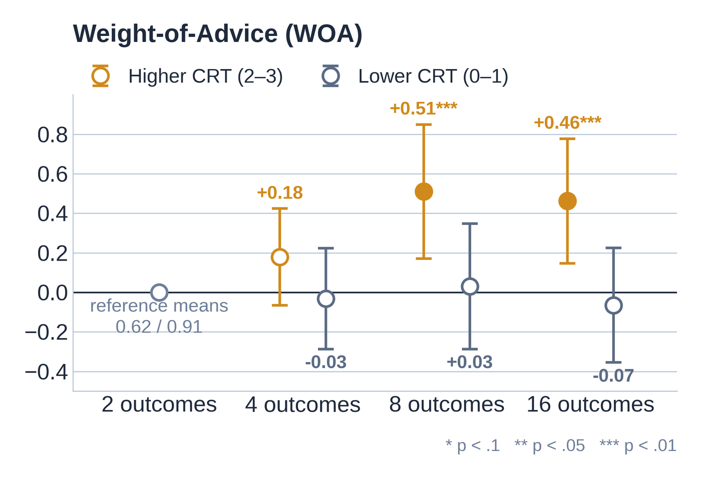

Decision Complexity and Trust in Large Language Model Advisors
Do people rely more on an LLM’s advice when a decision gets harder? In an incentive-compatible experiment, they do, but only when they can follow the advisor’s reasoning.
Read the abstract →